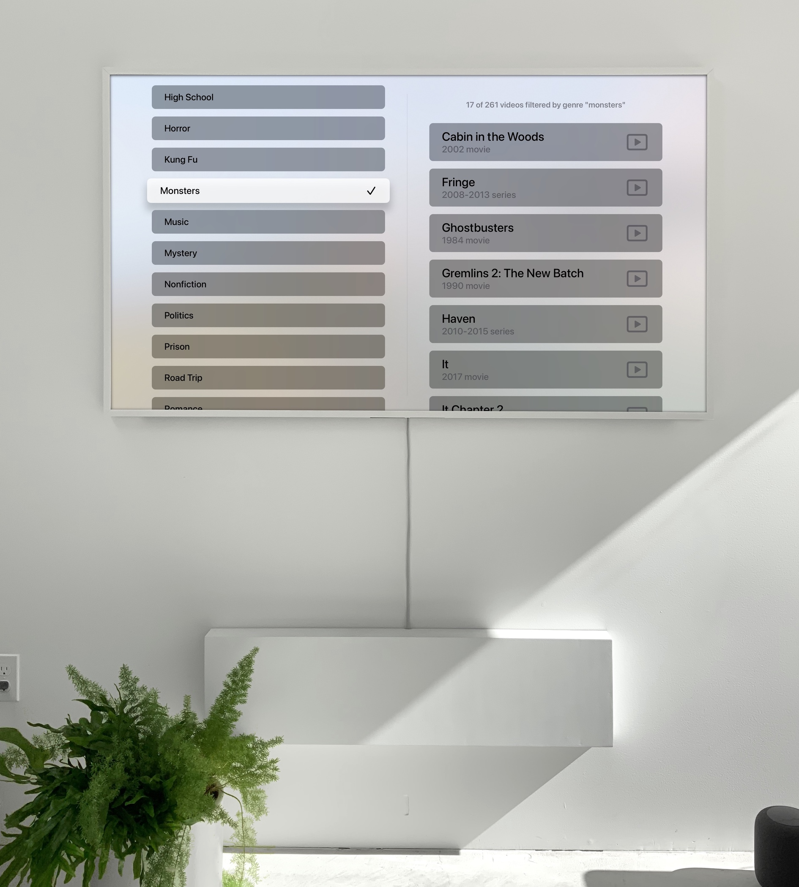
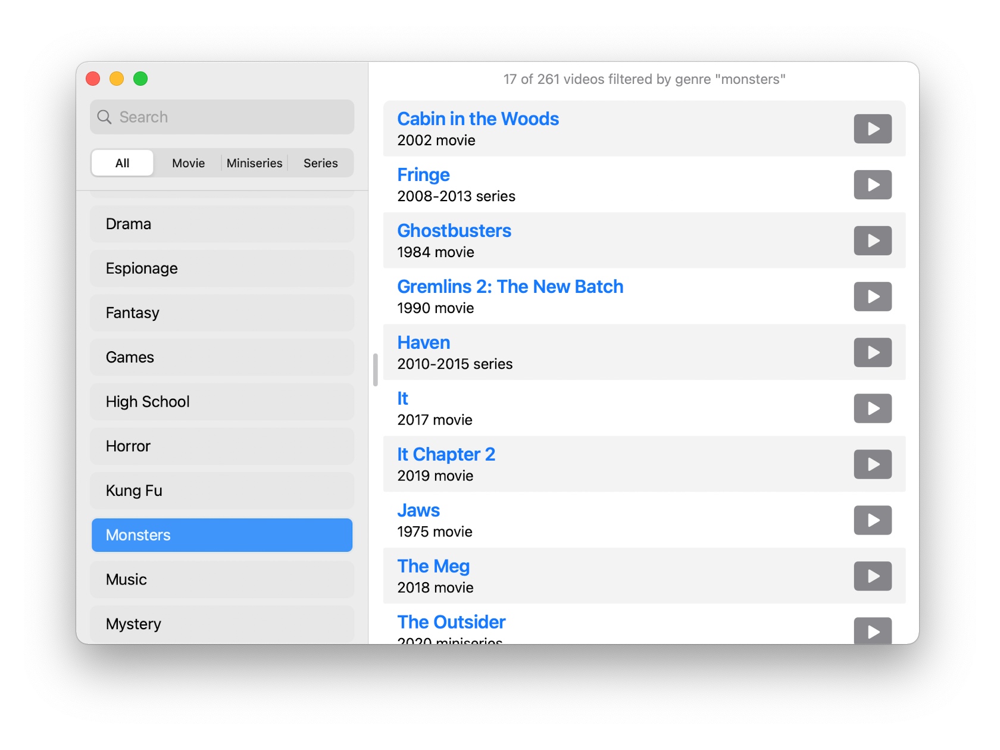
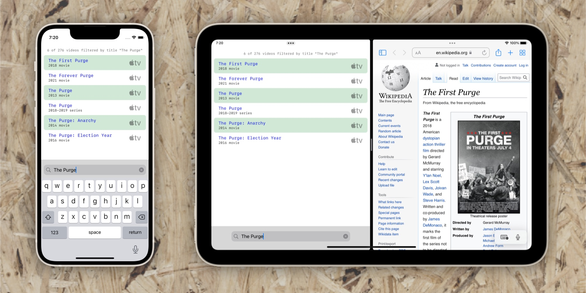
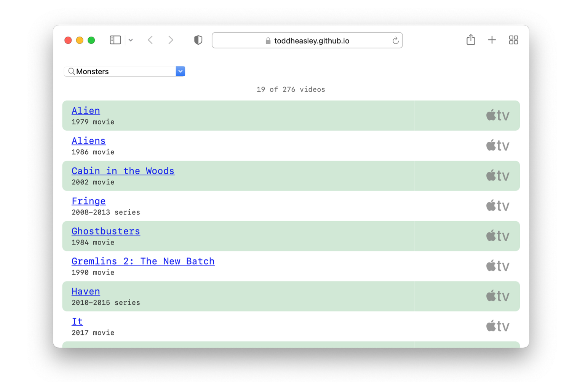
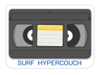

<!DOCTYPE html>
<title>Couchnado - Todd Heasley</title>
<meta charset="UTF-8">
<meta name="viewport" content="initial-scale=1.0">
<meta name="og:image" content="https://toddheasley.github.io/couchnado.jpg">
<meta name="og:title" content="Couchnado - Todd Heasley">
<meta name="og:description" content="For Apple TV moody watching">
<meta name="description" content="For Apple TV moody watching">
<link rel="apple-touch-icon" href="apple-touch-icon.png">
<link rel="shortcut icon" href="favicon.ico">
<link rel="stylesheet" href="super.css">
<header>
    <h1><a href="index.html">Todd&nbsp;Heasley</a></h1>
</header>
<main>
    <h1>Couchnado</h1>
    <h2><time>2020-</time></h2>
    <figure><a href="couchnado-tv.jpg"><picture><source media="(prefers-color-scheme: dark)" srcset="couchnado-tv-dark.jpg"></picture></a></figure>
    <p>For Apple TV moody watching</p>
    <figure><a href="couchnado-mac.png"><picture><source media="(prefers-color-scheme: dark)" srcset="couchnado-mac-dark.png"></picture></a></figure>
    <p><a href="couchnado-mac.zip"></a></p>
    <figure><a href="couchnado.jpg"><picture><source media="(prefers-color-scheme: dark)" srcset="couchnado-dark.jpg"></picture></a></figure>
    <figure><a href="couchnado-web.png"><picture><source media="(prefers-color-scheme: dark)" srcset="couchnado-web-dark.png"></picture></a> <figcaption>HyperCouch</figcaption></figure>
    <p><a href="https://toddheasley.github.io/couchnado"></a> <a href="https://github.com/toddheasley/couchnado"></a></p>
</main>
<footer>
    <p><a href="https://github.com/toddheasley">@toddheasley</a></p>
</footer>